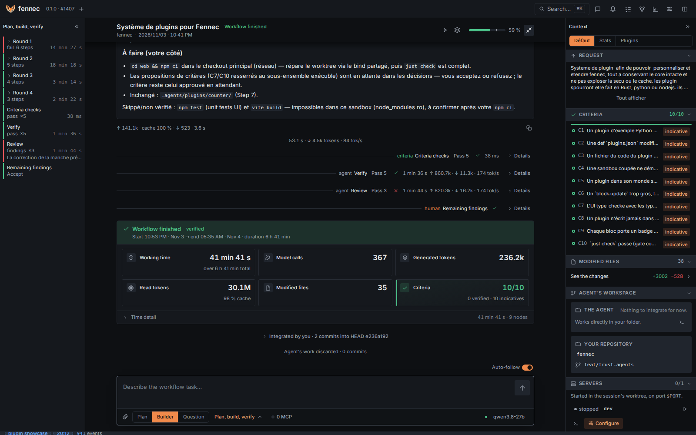
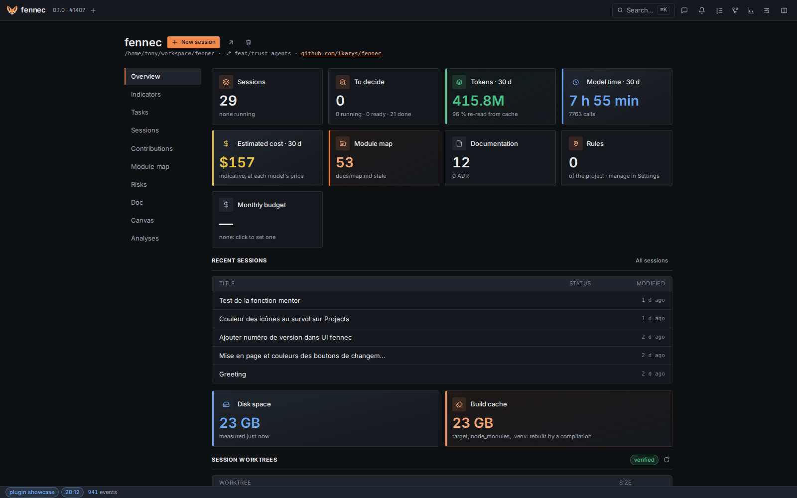
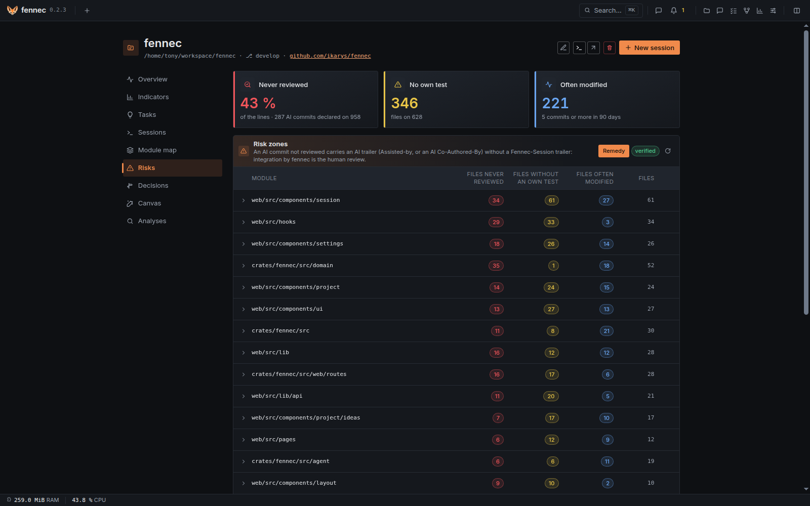
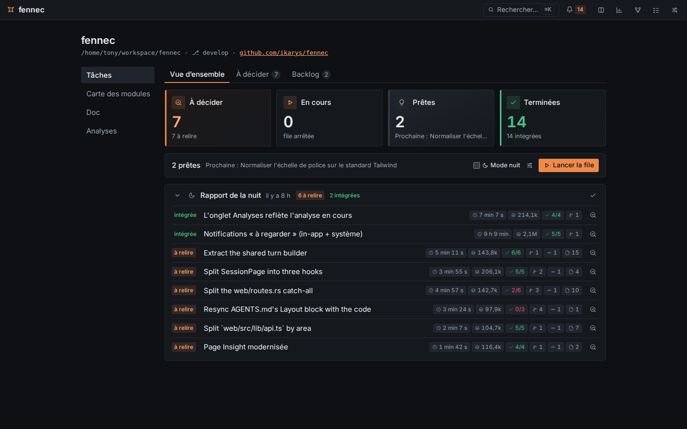
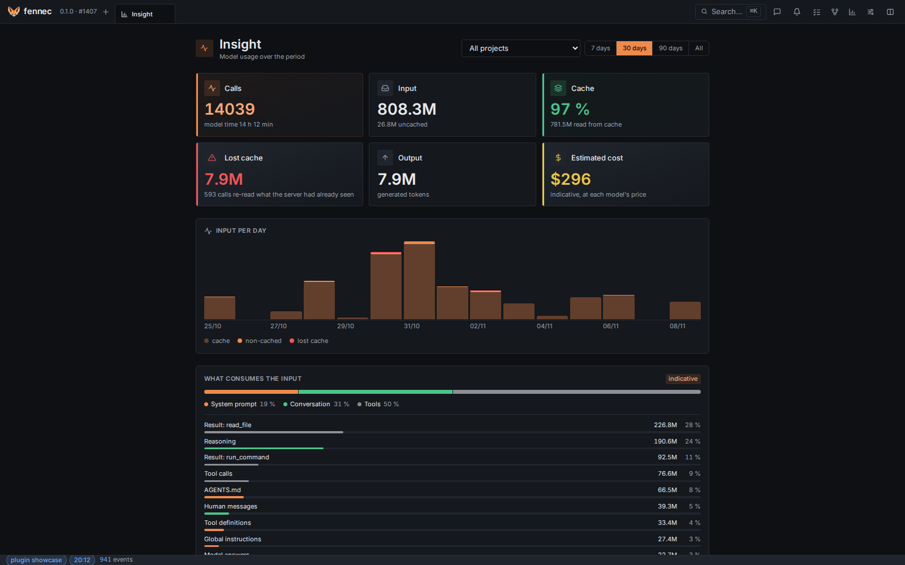

Chat
New chat in the top bar, no project
A conversation with no folder and no git: ask, draft, try a snippet. The model works in a scratch folder created only when a tool needs it, deleted with the chat.
AI-written code is abundant. Understanding, mastery and responsibility are rare. fennec tools what is rare.
curl -fsSL https://raw.githubusercontent.com/ikarys/fennec/main/install.sh | sh
Linux or macOS, one Rust binary. Windows through WSL2. Then open http://127.0.0.1:7777 and follow the first run guide.

Pick the one that fits the job. The further right, the more fennec runs for you, and the more it checks before anything reaches your branch.
New chat in the top bar, no project
A conversation with no folder and no git: ask, draft, try a snippet. The model works in a scratch folder created only when a tool needs it, deleted with the chat.
A session on a project
You pick the agent and talk to it directly:
The Workflow picker in the composer
You describe the task once, and a graph runs it: Plan, build, verify plans with you, builds in its own worktree, runs the criteria checks and has a fresh agent review the diff, then stops at the review gate. Step by step mode stops before each node.
The hero screenshot above is one such run. Draw your own in the visual editor: agent, shell, human, condition and parallel nodes.
The approved plan is a contract. Its "Done when" criteria are checked by commands fennec runs, then fresh agents that did not write the code review it. Findings go back to the builder. Integration stays the human's click after a review gate.

Risk zones from git: lines from AI commits never reviewed, files with no test of their own, files changed often. Verified, computed by fennec, not a model.

Night mode runs your ready ideas unattended, within per-idea caps on time and tokens. ask_user answers itself, the agent records each decision with its reason, and changing the acceptance criteria is refused. In the morning a report lists each idea with its duration, tokens, criteria passed and files changed. Integrating stays your click, one idea at a time.

The prompt only grows, so the inference cache is reused turn after turn. Any OpenAI-compatible endpoint works, a local model included. A usage ledger tracks calls and tokens, and budgets cap the month's spend.

A prompt injection in a README, a dependency or a web page can make a model run anything. So every command it runs, and every shell step of a workflow, runs isolated: bubblewrap on Linux, Seatbelt on macOS.
You are never sandboxed. Your terminal, your editor, the servers you start and your own git keep your normal rights.
~/.ssh, ~/.aws, ~/.config/gh, credentials and fennec's own database are invisible to commands.AGENTS.md, accepted ADRs and .git are read-only. Changing one takes your waiver.git push, branch moves and PR merges before they run. Pushing is your action.Most coding agents optimise for writing code fast. fennec is for professional developers who want to stay the authors of their software: you frame the work, the agent loop runs the steps, then waits for your review. Nothing is integrated without a human decision.
fennec is built with AI assistance itself, in the open. Each commit names the models that wrote it, and the checks are ones anyone can re-run.
The script installs the latest release into ~/.local/bin after checking its checksum, and writes a systemd user service on Linux.
The binary and its service
curl -fsSL https://raw.githubusercontent.com/ikarys/fennec/main/install.sh | sh
With mise
mise use -g github:ikarys/fennec
Read the README or the user guide.